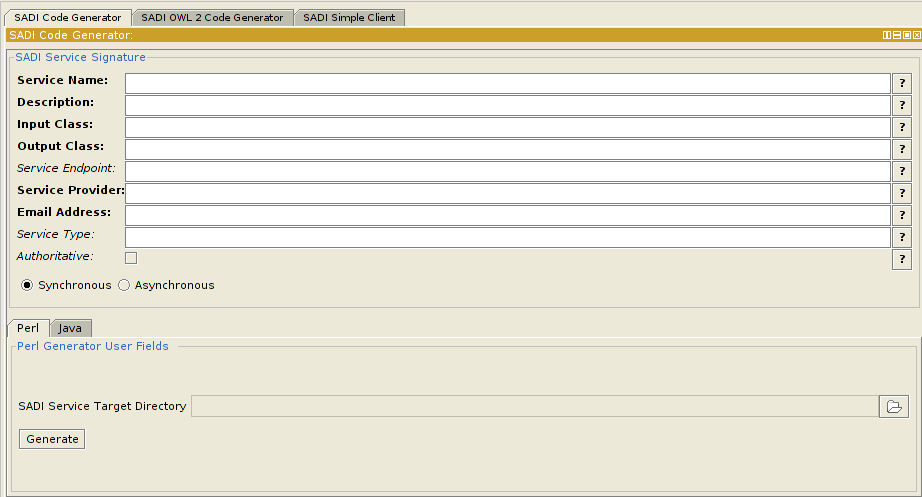

The SADI plugin for Protege is a collection of views, available in a single tab, that simplify the provision of SADI services.
Available to SADI service authors are views that:
Now SADI service writers can define the ontologies that their services will utilize and implement the services all from one common interface.
In order to use this plugin, you will need to make sure to download Protege version 4.1 or higher.
For those of you wishing to implement your SADI services with Perl, you will need to download and install the SADI module from CPAN.
SADI services written with JAVA will need a JAVA JDK version 1.6 or higher.
Finally, you will need to make sure that you have obtained and installed the plugin. You can install the plugin using Protege's "Check for plugins ..." feature.
SADI services require a lot of preliminary planning before you can realize them. One of the very first steps in creating a SADI service is to define their inputs and outputs. More often than not, a SADI service writer will use Protege to do this. Once the inputs and outputs have been defined, the next step is to define the SADI service signature and to generate an implementation. Once the implementation is complete, the next natural step is to test the service. The SADI plugin for Protege can help the user do all of these things!
Features of the SADI plugin include:
SADI Code Generator:
A view that helps you generate the scaffold of your service implementation.
SADI OWL 2 Code Generator:
A view that helps you generate JAVA classes or Perl modules from OWL entities for use with your SADI services or other OWL related projects.
SADI Simple Client:
This view provides an easy way for you to call SADI services with predefined input taken from files or with individuals selected from the Protege Individuals view.
The SADI Service Generator can generate source code for SADI services in either Perl or Java. Depending on the language you wish to generate your service code in, you will see 2 subsections for this view.
One the subsections is called the SADI Service Signature section. This section remains constant regardless of whether you choose to generate services in JAVA or Perl. The second subsection is language specific and is either called Java Generator User Fields or Perl Generator User Fields. This subsection allows you to provide language specific options for generating your services. The specifics of this second subsection will be outlined later on.
The SADI Service Signature subsection allows you to provide the key pieces of information required to describe a SADI service. In order to describe a SADI service, you need to provide:
The Perl SADI Code Generator has the ability to generate fully compilable code for SADI services. In order to generate Perl source code using the SADI Code Generator, all that is needed is to ensure that the Perl radio button is selected (as is shown below):

There are 2 sections to this view: a SADI Service Signature section (as described above) and a Perl Generator User Fields section.
Perl Generator User Fields
The Perl Generator User Fields subsection is where you enter configuration required for the Perl-SADI module and choose to either generate synchronous or asynchronous SADI services.
In order to successfully generate a SADI service in Perl, you will need to specify the Perl-SADI home directory. This directory is created automatically when you install the Perl-SADI module. This directory is usually located in your home directory.
Depending on whether or not your service is time-consuming, you can choose to generate either a synchronous or asynchronous service skeleton.
Also, you may wish to use the OWL2Perl code generator and generate Perl modules for your OWL output classes for use in your SADI service skeleton. This option can increase generation time by several minutes.
Once you have filled out both sections of the SADI Code Generator, you can click the Generate button and your service will be generated for you!
For more information on SADI service provision, unrelated to this plugin but useful in writing services, using the Perl language, please review the appropriate documentation in Getting Help.
The JAVA SADI Code Generator is much like the Perl generator in that it can produce source code for your SADI services. In addition to generating source code for your SADI services, the JAVA generator can also create WAR files for you to deploy to a JAVA Servlet container like Tomcat or Jetty, as well as deploy your services locally for testing purposes. All that is needed for you to use the JAVA generator is to ensure that the Java radio button is selected (as shown below):
There are 2 sections to this view: a SADI Service Signature section (as described above) and a Java Generator User Fields section.
Java Generator User Fields
The Java Generator User Fields subsection is where you enter configuration required for service provision in Java and choose to either generate synchronous or asynchronous SADI services.
In contrast to the Perl Generator, the Java generator treats each service as a separate project and packages them up accordingly. Additionally, the Java generator uses Maven to build and manage your services.
In order to successfully generate a SADI service in Java, you will need to specify a couple of things:
- SADI Service Target Directory - the main directory to store each of your generated services.
- Package - the java namespace that you would like your generated SADI service to be a part of (e.g. com.example.sadi).
- Optional maven arguments - this is the place to enter any optional maven parameters that you think you may need. Optional parameters must be separated by spaces.
Depending on whether or not your service is time-consuming, you can choose to generate either a synchronous or asynchronous service skeleton.
Once you have filled out both sections of the SADI Code Generator, you can click the Generate button and your service will be generated for you!
For more information on SADI service provision, unrelated to this plugin but useful in writing services, using the Java language, please review the appropriate documentation in Getting Help.
The SADI Service Generator can generate code for SADI services in either Perl or Java.
OWL to Perl Generator
The OWL 2 Code Generator can generate either Perl modules or Java classes from your OWL classes. These classes can come from either a file or by selecting an OWL class from Protege's OWL Class Hierarchy.
To generate code from an existing ontology, make sure to select Generate Code from OWL File and to enter the absolute path to the ontology.
If you prefer to generate code for just those OWL classes that you wish to use in your service, then click on the radio button Choose OWL Class from ontology and then select the OWL class from Protege's OWL Class Hierarchy.
Before generating any code, you will need to decide which language, Java or Perl, you would like your OWL classes defined in. To generate Perl modules, select the Perl radio button. Similarly, to generate Java modules, select the Java radio button.
When you click on Generate, the modules will be generated for you. This process can take several minutes.
The SADI plugin for Protege has a very simple client that can be used to test SADI services. The SADI Simple Client view is composed of 3 sub panels: Service Invocation, Input Data and Service Results.
This sub panel is where the URL for the service is specified. Assuming that you have already specified the input for the service (using the Input Data sub panel), you can call the service by clicking on the Call Service button. If you feel like cancelling the service call, then hit Cancel.
The Input Data sub panel allows you to either select a file to send a SADI service or to choose an OWL individual from Protege's OWL Individual view.
Choosing an individual from Protege's OWL Individual view allows you, in addition, to also save the individual in a separate file. To save the selected individual, click on the Save Input button.
Service results are always shown in the Service Results sub panel. The results of a successful invocations of a service, as well as any errors are shown in this panel.
Why do I get the error java.lang.ClassNotFoundException: org.protege.common.log.ProtegeRotatingAppender?
Our plugin cannot find that class, but you knew that. You can silence this error by adding an Optional maven argument:
-Dlog4j.configuration=log4j.xmlSADI service generation is unaffected by that reported error.
For help with this plugin, or to report any bugs or inconsistencies, feel free to contact me via email.
The best place to get information about the SADI framework is to visit the SADI home page located at http://sadiframework.org.
There are numerous mailing lists for users/developers of the SADI framework, some of the more common ones are:
Perl Resources
- Building a Synchronous SADI Service With Perl
- Building a Synchronous SADI Service With Perl (Advanced)
- Building a Synchronous SADI Service With Perl and Generated OWL Modules (Advanced ... but more simple!)
- Building an Asynchronous SADI Service With Perl
- Building an Asynchronous SADI Service With Perl and Generated OWL Modules (Advanced ... but more simple!)
- Adding a Unit Test to your Service
- Working with Perl Modules Representing OWL Classes
Java